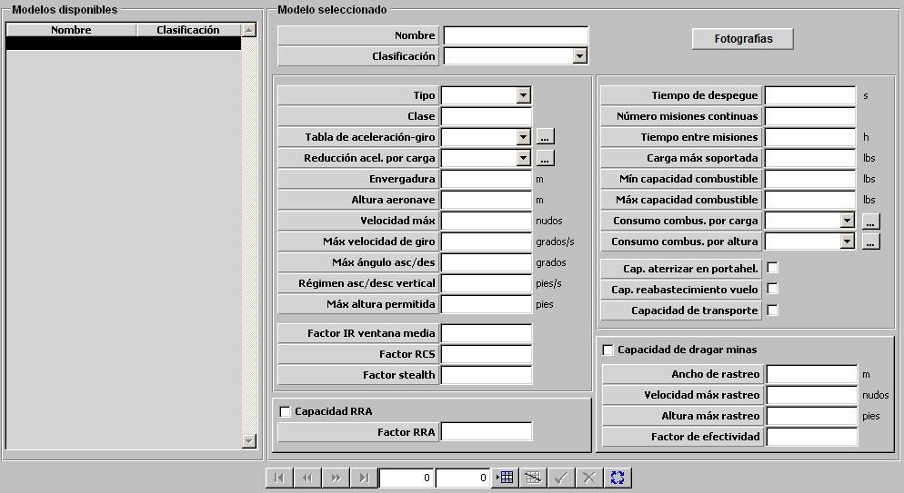

Plataformas Helicópteros

Descripción de los parámetros:
Fotografías: Pulsando este botón se accede a la ventana de Fotografías desde la que se pueden incluir varias fotografías de una plataforma, asociadas a distintos niveles de reconocimiento. Durante la ejecución del ejercicio, cuando se sitúe el Hook en una detección, dependiendo del nivel de reconocimiento de la misma se mostrará una de estas fotografías.
Para las plataformas aéreas se consideran 4 niveles de reconocimiento por lo que se podrán incluir hasta 4 fotografías.

En esta ventana pulsando en los botones Nivel 1 (2,3 ó 4) se accede al navegador desde el que se puede buscar y cargar una imagen.
Los botones Nivel 5 y Nivel 6 no están accesibles para las plataformas aéreas.
Pulsando el botón Aceptar se cierra la ventana y se guardan en memoria todas las imágenes cargadas hasta que finalmente se acepten o rechacen los datos de la plataforma en edición.
Tipo de Plataforma: Puede tomar los siguientes valores:
- ASW
- ASUW
- TRANSPORT
- MCM
- RECCON
- GROUND SUPPORT
- SAR
- UNMANNED
Este parámetro determina la clasificación de los contactos correspondientes a esta plataforma obtenidos por los sensores de otras unidades.
Clase: Campo alfanumérico de hasta 30 caracteres que describe la clase de la plataforma.
Tabla Aceleración-Giro: Ver apartado Aceleración y Giro de Aéreas.
Reducción Aceleración por Carga: Ver apartado Reducción de Aceleración de Aéreas según Carga.
Envergadura: Este parámetro es tenido en cuenta por los modelos de sensores optrónicos y radar para calcular la distancia a la que esta plataforma es detectada.
Unidades: metros
Rango: 0,1 – 99,9
Altura Aeronave: Este parámetro es tenido en cuenta por los modelos de sensores optrónicos y radar para calcular la distancia a la que esta plataforma es detectada.
Unidades: metros
Rango: 0,1 – 99,9
Velocidad Máxima: Este parámetro es tenido en cuenta por el modelo de dinámica como límite superior de velocidad para la plataforma.
Unidades: nudos
Rango: 0 – 9999
Máxima Velocidad de Giro: Este parámetro es tenido en cuenta por el modelo de dinámica como límite superior de velocidad de giro para la plataforma.
Unidades: grados / segundo
Rango: 1 – 99,9
Régimen de Asc/Des Vertical: Este parámetro es tenido en cuenta por el modelo de dinámica como límite superior de velocidad de ascenso y descenso vertical para la plataforma.
Unidades: pies / segundo
Rango: 1,0 – 999,9
Máximo Ángulo de Asc/Des: Este parámetro es tenido en cuenta por el modelo de dinámica como límite superior del ángulo de ascenso y descenso para la plataforma.
Unidades: grados
Rango: 0,0 – 90,0
Máxima Altura Permitida: Este parámetro es tenido en cuenta por el modelo de dinámica como límite superior de altura para la plataforma.
Unidades: pies
Rango: 0 – 99999
Factor IR ventana media: Factor que modela la variación de Tamaño IR con el "Aspecto" (dado por el ángulo alfa = rumbo del contacto - marcación del contacto) de la unidad.
Unidades: Tanto por uno
Rango: 0,0 – 1,0
Ejemplo:
Si Factor IR = 0 ⇒ Tamaño IR = Tamaño IR · seno (alfa).
Si Factor IR = 0,25 ⇒ Tamaño IR = Tamaño IR ( 0,25 + 0,75 · seno (alfa) ).
Si Factor IR = 1 ⇒ Tamaño IR no cambia con Aspecto.
Factor Stealth: Factor que reduce el RCS de la plataforma. Simula el grado de invisibilidad de la plataforma ante radares debido a las técnicas de construcción empleadas.
Unidades: Tanto por uno
Rango: 0,0 – 1,0
Factor RCS: Factor que modela la variación de RCS con el "Aspecto" (dado por el ángulo alfa = rumbo del contacto - marcación del contacto) de la unidad.
Unidades: Tanto por uno
Rango: 0,0 – 1,0
Ejemplo:
Si Factor RCS = 0 ⇒ RCS = RCS · seno (alfa).
Si Factor RCS = 0,25 ⇒ RCS = RCS ( 0,25 + 0,75 · seno (alfa) ).
Si Factor RCS = 1 ⇒ RCS no cambia con Aspecto.
Tiempo de Despegue: Tiempo que tarda la plataforma en efectuar la maniobra de despegue.
Unidades: segundos
Rango: 0 – 999,9
Número de Misiones Continuas: Número máximo de misiones consecutivas que puede llevar a cabo la unidad. Cuando se supera este número de misiones, la unidad debe esperar un Tiempo entre Misiones para llevar a cabo otra misión.
Unidades: ---
Rango: 1 – 999
Tiempo entre Misiones: Tiempo que debe esperar la unidad cuando supera el número máximo de misiones para efectuar la siguiente. Simula el tiempo dedicado a revisiones de mantenimiento de la plataforma.
Unidades: horas
Rango: 0 – 999,9
Carga Máxima Soportada: Este parámetro es tenido en cuenta para los consumos y recarga de combustible y para permitir o no cargar una configuración de armas.
Unidades: libras
Rango: 0 – 99999
Máxima Capacidad Combustible: Este parámetro es tenido en cuenta por el modelo de dinámica en la simulación de consumos y recargas de combustibles. El tanto por ciento de combustible inicial de una unidad se calcula sobre este valor.
Unidades: libras
Rango: 0 – 999999
Mínima Capacidad Combustible: Este parámetro se emplea para presentar una alarma a operador cuando el combustible de la plataforma está por debajo de esta cantidad, avisándole de que el combustible está próximo a agotarse.
Unidades: libras
Rango: 0 – 99999
Consumo Combustible por Carga: Ver apartado Consumo de Combustible de Aéreas según Carga.
Consumo Combustible por Altura: Ver apartado Consumo de Combustible de Aéreas según Altura.
Capacidad de Aterrizaje en Portahelicópteros: Determina si la plataforma tiene capacidad de aterrizar en plataformas de superficie que tengan Capacidad de Portar Helicópteros.
Capacidad de Reabastecimiento en Vuelo: Determina si la plataforma tiene capacidad de ser reabastecida en vuelo por otras plataformas aviones que tengan Capacidad de Suministrar Combustible.
Capacidad de Transporte: Determina si la plataforma tiene capacidad de transportar unidades terrestres.
Capacidad RRA: Determina si la plataforma tiene capacidad de RRA, lo cual es tenido en cuenta por el modelo de radar para ampliar el alcance al que detecta esta unidad siempre que el equipo sea RRA y la unidad sea del mismo bando.
Factor RRA: Factor que amplía el alcance de radares RRA de unidades amigas detectando a esta unidad. Este parámetro sólo puede ser introducido si se ha seleccionado Capacidad RRA.
Unidades: ---
Rango: 1,0 – 2,0
Capacidad de Dragar Minas: Determina si la plataforma tiene capacidad de dragar minas.
Ancho de Rastreo: Este parámetro determina la velocidad con que disminuye la densidad de minas de una zona minada cuando esta plataforma se encuentra en ella dragando minas. Este parámetro sólo puede ser introducido si se ha seleccionado Capacidad de Dragar Minas.
Unidades: metros
Rango: 0 – 999
Velocidad Máx. de Rastreo: Velocidad máxima de la plataforma para que pueda dragar minas. Este parámetro sólo puede ser introducido si se ha seleccionado Capacidad de Dragar Minas.
Unidades: Nudos
Rango: 0 – 999
Altura Máx. de Rastreo: Altura máxima de la plataforma para que pueda dragar minas. Este parámetro sólo puede ser introducido si se ha seleccionado Capacidad de Dragar Minas.
Unidades: pies
Rango: 0 – 999